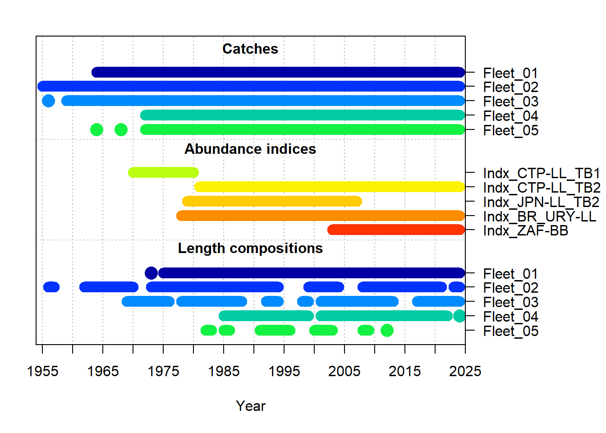
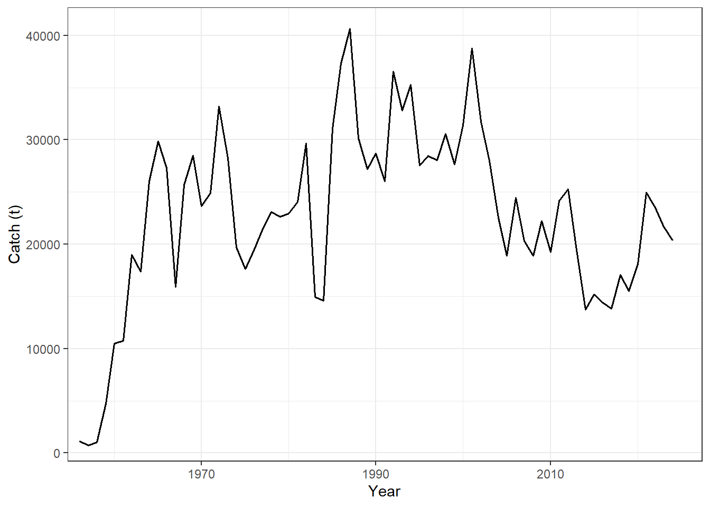
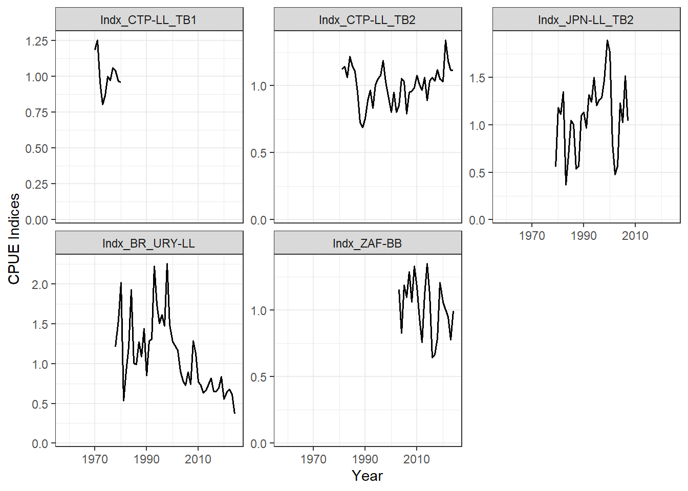
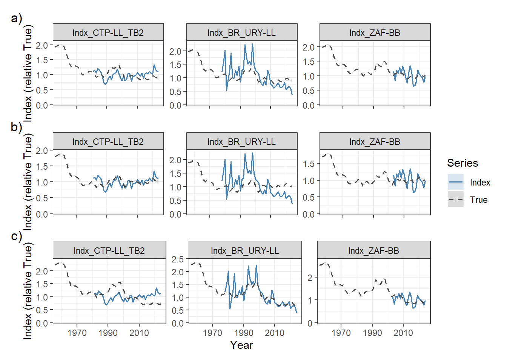
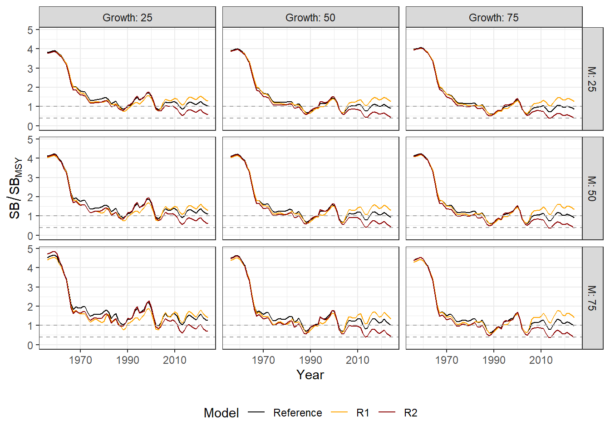
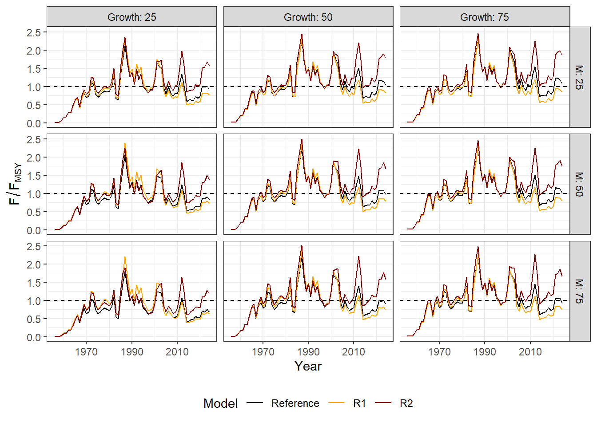

2 Operating Models
2.1 OM Conditioning
The operating models were based on the recent SALB stock assessment, completed in June 2026 using the Stock Synthesis 3 (SS3) assessment framework (Methot and Wetzel 2013). See the Report of the 2026 ICCAT Albacore Stock Assessment Meeting and the Report of the 2026 ICCAT Albacore Data Preparatory Meeting for full details on the stock assessment.
The assessment model integrated total catches, standardized indices of abundance, and length-composition data covering the period 1956 – 2024. Five fishing fleets were defined by aggregating catch and length composition data for fishing fleets with similar properties (Table 2.1; Figure 2.1; Figure 2.2). Five standardized CPUE indices were used in the Base Case assessment (Table 2.2; Figure 2.1; Figure 2.3).
| Fleet | Definition (FlagName and Gear Group) | Catch | Size composition data | |
|---|---|---|---|---|
| Fleet 1 | Chinese Taipei (LL), Korea (LL) | 1964-2024 | up to 2024 | |
| Fleet 2 | Japan (LL), China (LL), EU-Spain (LL), EU-Portugal (LL), USA (LL), Philippines (LL), St Vincent and Grenadines (LL), Vanuatu (LL), Honduras (LL), NEI (LL), Côte D’Ivoire (LL), United Kingdom (LL), Seychelles (LL), UK.Sta Helena (LL), Angola (LL), Senegal (LL), Trinidad and Tobago (LL) | 1956-2024 | 1956-2024 | |
| Fleet 3 | Brazil (LL, SU), Uruguay (LL), Namibia (LL), Panama (LL), South Africa (LL, UN), Argentina (LL, TW, UN), Belize (LL), Cambodia (LL), Cuba (LL, UN) | 1959-2024 | 1969-2024 | |
| Fleet 4 | South Africa (BB, HL, PS, RR, SP) | 1973-2024 | 1980-2024 | |
| Fleet 5 | All others | 1961-2024 | 1961-2024 |
| Index Name | Definition | Years |
|---|---|---|
| Indx_CTP-LL_TB1 | Chinese Taipei longline, time block 1 | 1970-1980 |
| Indx_CTP-LL_TB2 | Chinese Taipei longline, time block 2 | 1981-2024 |
| Indx_JPN-LL_TB2 | Japan longline | 1979-2017 |
| Indx_BR_URY-LL | Brazil/Uruguay longline | 1978-2024 |
| Indx_ZAF-BB | South Africa baitboat | 2003-2024 |


2.2 Primary Uncertainties
The primary uncertainties identified during the stock assessment process related to the life-history parameters related to growth and natural mortality rate, and the conflicting signals in the indices of abundance that were fit in the assessment (see assessment reports linked above).
2.2.1 Life History Parameters
Following the assessment, growth was modelled with the von Bertalanffy function with parameters \(L_\infty\), \(K\), and \(t_0\) describing the mean asymptotic length, the Brody growth coefficient, and the theoretical age where mean length is 0 respectively. Natural mortality (M) was modelled with the Lorenzen function which assumes decreasing natural mortality as fish increase in size (Lorenzen et al. 2022). The stock-recruitment relationship modelled with the Beverton-Holt equation, parameterized with steepness (h) fixed at 0.75. Maturity was specified as an at-age schedule with fish reaching 50% maturity at age 5 years and full maturity at 6 years. See Table 5 in the Data Preparatory Report for a full list of the life-history parameters used in the model.
The von Bertalanffy parameters and the natural mortality rate were identified as the primary life-history uncertainties. To account for these uncertainties, a factorial uncertainty grid was developed spanning the two axes of uncertainty (Growth and Natural Mortality), each with three levels corresponding to the 25th, 50th, and 75th percentiles of the estimated distributions for these parameters (Table 2.3). The 50th percentile level for each axis matches the Base Case stock assessment model.
| Percentile | \(L_\infty\) | \(K\) | \(t_0\) | \(M\) |
|---|---|---|---|---|
| 25th | 115.93 | 0.235 | -0.561 | 0.29 |
| 50th (Base Case) | 121.24 | 0.238 | -0.891 | 0.36 |
| 75th | 125.02 | 0.237 | -1.217 | 0.44 |
The three levels for each axis produces a 3 x 3 uncertainty grid with 9 variations (Table 2.4). Figure 2.4 shows the length- and natural mortality-at-age curves for each of the 9 combination of parameters in the uncertainty grid.
| # | OM | Growth | Natural Mortality |
|---|---|---|---|
| 1 | G_25-M_25 | 25th | 25th |
| 2 | G_25-M_50 | 25th | 50th |
| 3 | G_25-M_75 | 25th | 75th |
| 4 | G_50-M_25 | 50th | 25th |
| 5 | G_50-M_50 | 50th | 50th |
| 6 | G_50-M_75 | 50th | 75th |
| 7 | G_75-M_25 | 75th | 25th |
| 8 | G_75-M_50 | 75th | 50th |
| 9 | G_75-M_75 | 75th | 75th |

2.2.2 Indices of Abudance
The primary uncertainty in the indices of abundance used in the stock assessment related to two of the three indices that continue through to the terminal year having conflicting trends in recent years: the Chinese Taipei index has an increasing trend in recent years, and the Brazil-Uruguay index has a declining trend (Figure 2.5).

2.3 Reference and Robustness OMs
A set of nine Reference OMs were conditioned using the factorial uncertainty grid (Table 2.3) and following the stock assessment methodology of including all indices in the conditioning process (Figure 2.5).
Two additional Robustness sets of OMs were developed to span the uncertainty in the indices of abundance. The robustness models used the same factorial uncertainty grid as the Reference OMs, but varied in how the indices were treated in the SS3 conditioning model.
The first robustness set, R1, excluded the Brazilian–Uruguay index with the declining trend from the likelihood, while the second robustness set, R2, excluded the Chinese Taipei index (Figure 2.5).
The estimated spawning biomass from the nine Reference OMs was distributed around \(SB_{\text{MSY}}\), with \(SB/SB_{\text{MSY}}\) ranging from 0.86 to 1.26 and \(F/F_{\text{MSY}}\) ranging from 0.68 to 1.08, with the more pessimistic estimates of stock status corresponding with the higher Growth and lower Natural Mortality percentiles (Table 2.5; Figure 2.6; Figure 2.7).
The OMs in the R1 Robustness set had consistently higher estimates of \(SB/SB_{\text{MSY}}\) and lower values of \(F/F_{\text{MSY}}\) for each OM compared to the Reference Set, ranging from 1.26 to 1.41 and 0.63 to 0.84 respectively (Table 2.5; Figure 2.6; Figure 2.7).
The R2 Robustness Set resulted in more pessimistic estimates of stock status compared to the Reference Set, with \(SB/SB_{\text{MSY}}\) and \(F/F_{\text{MSY}}\) ranging from 0.38 to 0.69 and 1.17 to 1.86 respectively (Table 2.5; Figure 2.6; Figure 2.7).
The MSY-based reference points (\(F_{\text{MSY}}\), \(SB_{\text{MSY}}\), and \(MSY\)) estimated for each OM in the Reference, R1, and R2 sets are reported in Table 2.6.
\(F_{\text{MSY}}\) was most sensitive to the Natural Mortality axis, ranging from 0.28 to 1.58 across the uncertainty grid and OM sets, increasing with higher Natural Mortality percentiles and decreasing with higher Growth percentiles.
\(SB_{\text{MSY}}\) was also primarily driven by the Natural Mortality axis, ranging from 14,732 t to 37,721 t, with only a modest reduction across the Growth axis.
In contrast, estimated \(MSY\) was comparatively stable across the uncertainty grid and among the three OM sets, ranging from 23,120 t to 25,876 t, reflecting the offsetting effects of the Growth and Natural Mortality uncertainty axes on stock productivity.
Reference |
R1 |
R2 |
||||
|---|---|---|---|---|---|---|
Growth/Natural Mortality |
SB/SBMSY |
F/FMSY |
SB/SBMSY |
F/FMSY |
SB/SBMSY |
F/FMSY |
G_25-M_25 |
1.03 |
0.92 |
1.28 |
0.77 |
0.57 |
1.57 |
G_25-M_50 |
1.11 |
0.82 |
1.30 |
0.72 |
0.61 |
1.38 |
G_25-M_75 |
1.26 |
0.68 |
1.41 |
0.63 |
0.69 |
1.17 |
G_50-M_25 |
0.90 |
1.04 |
1.26 |
0.83 |
0.44 |
1.78 |
G_50-M_50 |
0.94 |
0.97 |
1.29 |
0.79 |
0.43 |
1.69 |
G_50-M_75 |
1.01 |
0.90 |
1.34 |
0.74 |
0.43 |
1.59 |
G_75-M_25 |
0.86 |
1.08 |
1.26 |
0.84 |
0.38 |
1.86 |
G_75-M_50 |
0.91 |
1.02 |
1.33 |
0.80 |
0.38 |
1.76 |
G_75-M_75 |
0.97 |
0.94 |
1.41 |
0.75 |
0.38 |
1.67 |


Reference |
R1 |
R2 |
|||||||
|---|---|---|---|---|---|---|---|---|---|
Growth/Natural Mortality |
FMSY |
SBMSY |
MSY |
FMSY |
SBMSY |
MSY |
FMSY |
SBMSY |
MSY |
G_25-M_25 |
0.47 |
36,507 |
24,163 |
0.45 |
37,651 |
24,833 |
0.51 |
34,543 |
23,120 |
G_25-M_50 |
0.76 |
25,047 |
24,677 |
0.74 |
25,558 |
25,151 |
0.88 |
23,618 |
23,486 |
G_25-M_75 |
1.32 |
17,418 |
25,579 |
1.32 |
17,529 |
25,748 |
1.58 |
16,189 |
23,961 |
G_50-M_25 |
0.32 |
36,216 |
23,966 |
0.31 |
37,721 |
24,853 |
0.33 |
34,799 |
23,197 |
G_50-M_50 |
0.42 |
24,274 |
24,333 |
0.41 |
25,260 |
25,252 |
0.44 |
23,322 |
23,520 |
G_50-M_75 |
0.58 |
16,222 |
24,756 |
0.56 |
16,845 |
25,675 |
0.63 |
15,511 |
23,767 |
G_75-M_25 |
0.28 |
35,423 |
23,973 |
0.28 |
36,925 |
24,905 |
0.28 |
34,334 |
23,354 |
G_75-M_50 |
0.33 |
23,292 |
24,337 |
0.33 |
24,327 |
25,376 |
0.34 |
22,604 |
23,687 |
G_75-M_75 |
0.41 |
15,219 |
24,728 |
0.40 |
15,925 |
25,876 |
0.43 |
14,732 |
23,945 |